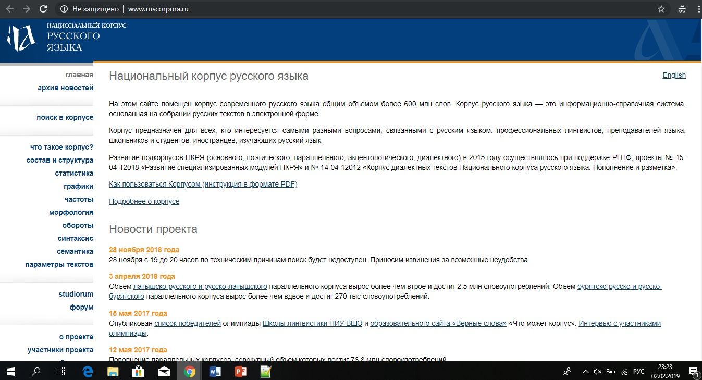
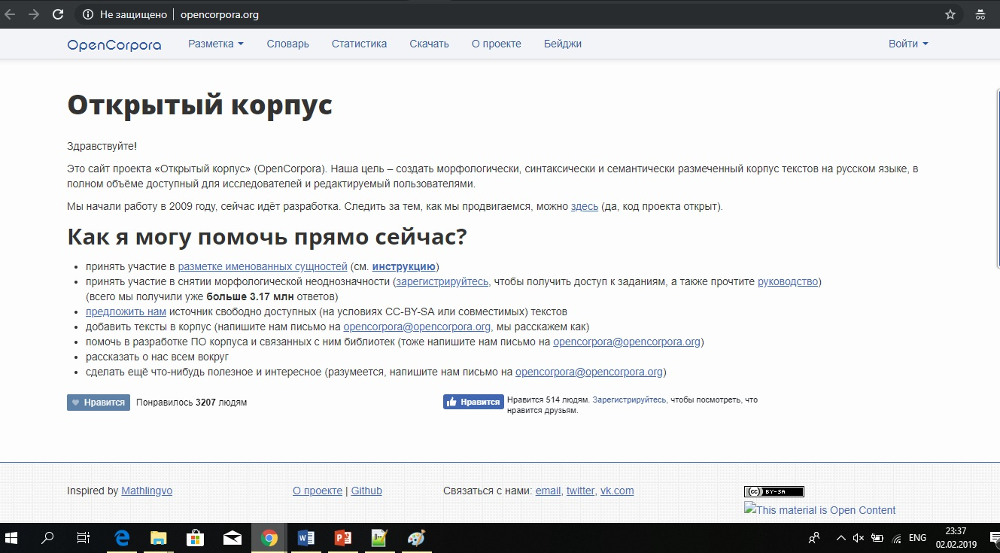
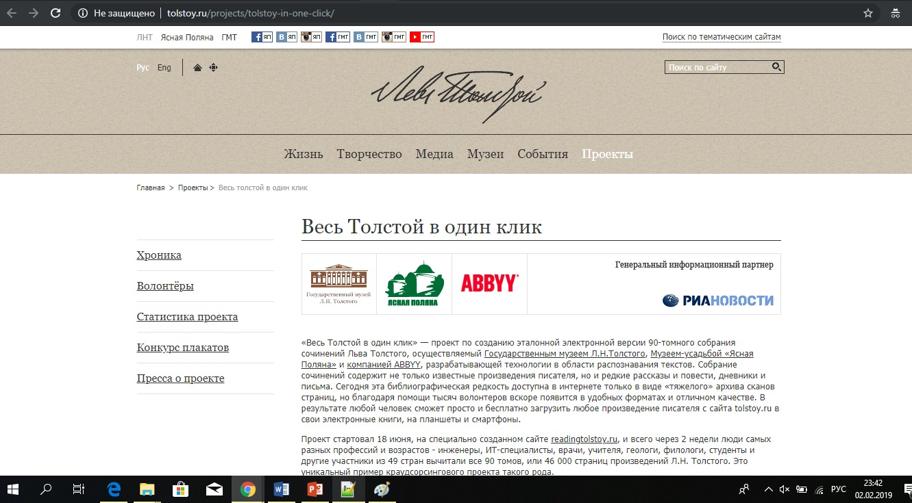
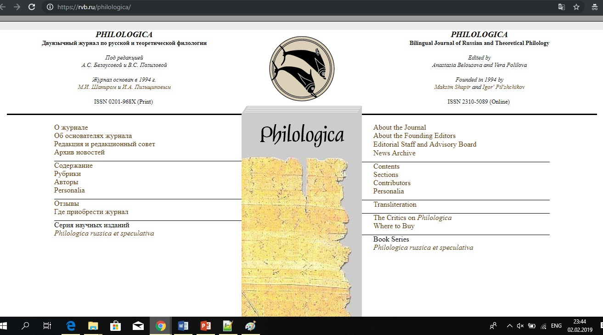
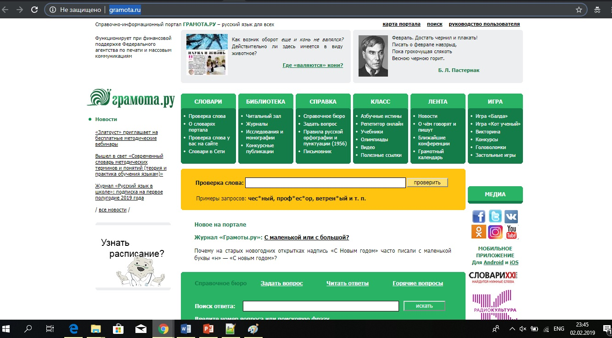

| Сайт |
Достоинства |
Недостатки |
Скриншот |
| Национальный корпус русского языка |
- Доступ к большому объему текстов
- Возможность поиска по подкорпусам (поэтическому, параллельному, акцентологическому, диалектному)
- Наличие лингвистической разметки
|
- Неудобный интерфейс
- Сложен в использовании
- Трудно разобраться в том, как задавать параметры поиска
- Встречаются ошибки
|
 |
| Открытый корпус |
- Минималистичный дизайн
- Наличие морфологической разметки
|
- Неудобный интерфейс
- Сложен в использовании
- Трудно разобраться в том, как задавать параметры поиска
|
 |
| Весь Толстой в один клик |
- Удобный интерфейс
- Возможность скачивать тексты в разных форматах
- Онлайн доступ к оцифрованным текстам
|
- На первый взгляд непонятно, на какую именно кнопку нажимать, чтобы увидеть собрание текстов
|
 |
| Philologica |
- Минималистичный дизайн
- Интерфейс параллельно на двух языках
- Трудно разобраться в том, как задавать параметры поиска
|
- Реклама внизу страницы
- Нет на главной странице информации о том, для чего предназначем сайт
- Нет возможности задавать параметры поиска
|
 |
| Грамота.ру |
- Удобный интерфейс
- Возможность искать одновременно по нескольким словарям
- Представлены также аудиословари
|
- Некоторые страницы (пр."Библиотека") слишком пестры в оформлении, сложно сконцентрировать взгляд
|
 |